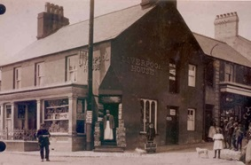
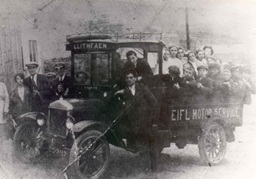

Liverpool House
Yma, roedd Swyddfa’r Post yn Llithfaen. William Evans oedd yno yng nghyfrifiad 1881 a’i fab yng nghyfraith. W.H. Roberts, yno erbyn troad y ganrif. Byddai hefyd yn cario nwyddau i Nant Gwrtheyrn. Mrs Dinah Owen fu’n cadw’r post am flynyddoedd wedyn gyda’i gwr Owen Hugh. Teulu Jordan oedd y teulu olaf i gadw siop yma. Roedd hi’n arferiad i hogiau’r pentref gymdeithasu gan bwyso ar ffenest y Post. Ar ôl cau fel siop prynwyd yr adeilad gan Ymddiriedolaeth Nant Gwrtheyrn i fod yn swyddfa.
Tynnwyd y llun yma tua 1910 ac mae W.H. Roberts yn sefyll yn nrws y Post a’i fab Alun Roberts efo’r tryc oedd yn arfer cario blawd i Nant Gwrtheyrn. Gwelir enw Liverpool House yn glir ar yr adeilad. Cyn hynny William Evans oedd yn cadw siop yma yng nghyfrifiad 1901.
Mae Dewi Williams, Brynmor, yn cofio Alun Roberts, y Post yn troi ei lori yn fws er mwyn cario pobl a phlant i Bwllheli. Roedd W.H. Roberts yn bostfeistr tua 1910 (ef oedd tad Alun Roberts). Byddent yn arfer cludo nwyddau i Nant Gwrtheyrn ar dryc bychan. Rhwng 1915-20 roedd Alun Roberts yn rhedeg bws i Bwllheli.
Roedd W.H. Roberts yn ddyn diwylliedig iawn. Ceir cofnod amdano yn yr Herald, 2 Ionawr 1914, yn rhoi darlith ddarluniadol ar y cyd â Robert John, Bryn Meirion, sef ‘Pedwar ugain mlynedd o deyrnasiad Victoria.’ Fo hefyd fyddai yn arwain côr y plant yn y pentref, côr a 45 o aelodau.
Dyma atgofion Ellen Evans, Alpha:
Sefydlwyd tair siop yn y pentref cyn hir, un ohonynt yn cadw popeth, a throl yn cario nwyddau o’r llong ‘Rebecca Mary’ o Bwllheli. Roedd y llong yma yn cario o Lerpwl. Dydd Mawrth oedd diwrnod y drol, ac erbyn hyn deuai’r ‘Herald Cymraeg’ o Bwllheli. Un hen chwaer yn dod yn brysur gyda’r Herald o’r siop, ac un o’r cymdogion yn ei stopio ar y ffordd a gofyn: ‘Beth ydi hwnna sydd gen ti?’ ‘Yr Herald’ ebe hithau. ‘O!’ ebe yntau, ‘mae’r siopwr wedi bod wrthi drwy’r prynhawn yn ‘i ddarllan o dy flaen di.’ Hithau wedyn yn troi ar ei sawdl a’i daro ar gowntar y siopwr a gofyn am ei phres yn ôl gan ei fod wedi darllen ei phapur. Yn y siop yma y byddai’r postman yn ei rhoi hi i fyny ac yn dosbarthu o’r fan honno, ar ôl dod o Bwllheli hefo’i gar a’i ferlyn.
Mrs Owen a’i merch oedd y teulu olaf i gadw siop yma yn Liverpool House. Ar ôl cau fel siop prynwyd yr adeilad gan Ymddiriedolaeth Nant Gwrtheyrn i gadw swyddfa yno.
Un o'r bysus cyntaf yn Llithfaen tua 1920.
Dyma Alun Roberts, mab W.H. Roberts yn un o fysus cyntaf Llithfaen. Mae o yn pwyso ar ddrws y bws a’i gefnder Tudor Evans, Manchester House tu ôl iddo. Tynnwyd y llun yma tua 1920. Ford ‘left hand drive’ yw’r bws. Costiodd £500 o Braids, Bae Colwyn. Roedd petrol yn 10 ceiniog y galwyn a thrwydded yn 15 swllt. Tynnwyd y llun ym Mhen Pistyll. I’r chwith yn sefyll mae Mary Williams, Pengraig (Crump wedi iddi briodi) ac wrth ei hochr Augusta Roberts, Liverpool House. William williamms, Vaynol yn un o’r tri arall sy’n sefyll.
Yn y lori: Rhes isaf (o’r chwith): Robert John Jones, Llanaelhaearn; Wheldon Williams, Vaynol, Dafydd Ifan Roberts, Nant; Ned Bach (brawd); Edward Owen, Nest; Richard Jones, Caenewydd; Gruffydd Jones, Y Felin;
Rhes ôl (o’r chwith): Menna Hughes, 1 Moriah Terrace; Nanw Griffiths; elizabeth Elin Jones, 9 Awelfryn; Catrin Griffiths, Tŷ’r Ysgol, Abigail Williams, Tanrallt.
Ffeithiau'r Cyfrifiad:
 Trigolion y pentref yn pwyso ar wal y Post yng nghanol yr eira.
Trigolion y pentref yn pwyso ar wal y Post yng nghanol yr eira.
 Olwen Post, Llanaelhaearn, Dinah Mary Roberts, Post, Thomas Gwylym Evans, Manchester House, Augustus Roberts, Post, Postmon.
Olwen Post, Llanaelhaearn, Dinah Mary Roberts, Post, Thomas Gwylym Evans, Manchester House, Augustus Roberts, Post, Postmon.